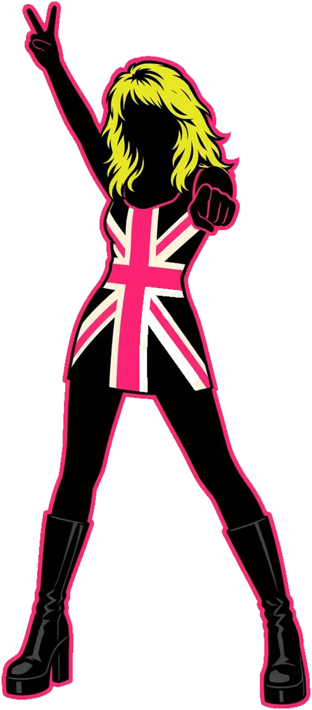

Niki Waldegrave
Director
Makes noise with impact
Comms strategist, ex-Fleet Street journalist and straight-talking northern monkey. 30 years' media experience, sharp news sense, premium contacts and precision execution.
Ex-Fleet Street, 30 yrsFive people, decades of newsroom and agency experience, one job: make your story impossible to ignore.

Director
Makes noise with impact
Comms strategist, ex-Fleet Street journalist and straight-talking northern monkey. 30 years' media experience, sharp news sense, premium contacts and precision execution.
Ex-Fleet Street, 30 yrsAI / Strategy / Social
Data king + content marketer
Former MullenLowe Sydney managing partner and media veteran of 20+ years. Clients include South Park, The Simpsons, TK Maxx, Harley-Davidson, governments and BAFTA docos.
20+ yrs mediaPR Executive
Engine behind the outreach
A fast-paced PR go-getter bringing heart and hustle to every campaign, with persistence, energy and a keen eye for trends and conversations.
Heart + hustlePR Executive
Storyteller + brand specialist
Blends creativity with strategy, connecting customers with brands for more than a decade; special interest in NFPs, health, advocacy and higher education.
10+ yrs brandAccounts
Bean counter + events
Media and events expert of 30+ years, running events and live sites across Asia Pacific and Europe.
30+ yrs eventsTell us the story. We’ll make it the one people can’t ignore.
Start the conversation →